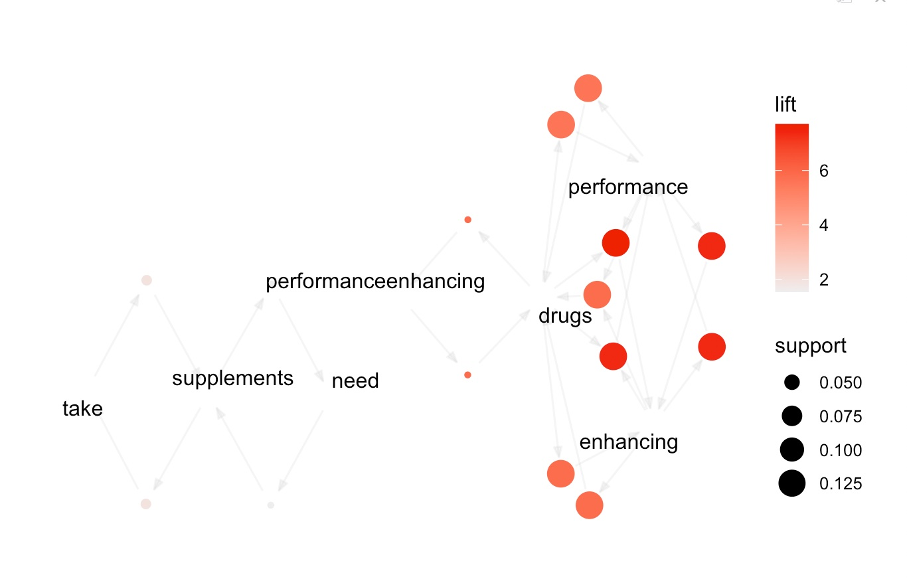
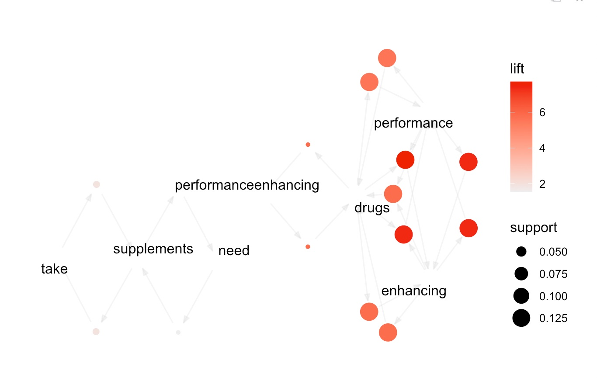

In the context of Twitter data related to supplement intake, we can apply association rule mining to identify patterns and relationships between different words or phrases that frequently co-occur in tweets. For example, we can identify words that are frequently associated with positive or negative sentiment towards supplement intake. To apply association rule mining, we first need to preprocess the data by cleaning and transforming it into a transactional format, where each transaction represents a tweet and each item represents a word or phrase. We can then apply an algorithm such as Apriori or FP-growth to identify frequent itemsets, which are sets of items that occur together frequently in the dataset.
Once we have identified the frequent itemsets, we can use these to generate association rules. An association rule is a conditional statement of the form "if X then Y", where X and Y are itemsets. The rule indicates that if a transaction contains the items in X, it is likely to contain the items in Y as well. We can use measures such as support, confidence, and lift to evaluate the strength and significance of the rules. In the case of Twitter data related to supplement intake, association rule mining can help us identify interesting patterns and relationships between different words or phrases that frequently co-occur in tweets. For example, we might discover that the words "healthy" and "supplement" frequently occur together in tweets with positive sentiment towards supplement intake, while the words "side effect" and "supplement" frequently occur together in tweets with negative sentiment towards supplement intake. These insights can be used to better understand public opinions and attitudes towards supplement intake.
Data Gathering:
- Used transaction data: transDatav2.csv.
Link to the dataset: Dataset
Link to the R code: Code
Transaction dataset and Frequent Items sample
ARM can be used to analyze data from energy usage in buildings and identify patterns that are associated with higher GHG emissions. In the case of supplement intake, association rule mining can be used to identify co-occurring supplements or patterns of supplement usage among individuals or groups. To use supplement intake data for association rule mining, the first step is to prepare the data in the form of a transactional dataset, where each row represents a unique individual and each column represents a supplement. Each cell in the dataset indicates whether the individual has taken the supplement or not. Once the dataset is prepared, association rule mining can be performed using algorithms such as Apriori, FP-Growth, or Eclat. These algorithms work by generating candidate itemsets of supplements and calculating the support and confidence of each itemset. The support of an itemset is the proportion of transactions that contain the itemset, and the confidence is the proportion of transactions containing the itemset that also contain a specific supplement or combination of supplements. The output of association rule mining is a set of rules that describe the relationships between supplements based on their support and confidence values. For example, a rule might indicate that individuals who take a specific supplement are also likely to take another supplement with a high confidence value. These rules can be used to gain insights into supplement usage patterns and inform targeted marketing or educational campaigns. In summary, supplement intake data can be used for association rule mining to identify patterns and relationships between supplements in large datasets. This can help to inform marketing strategies, identify areas for further research, and promote evidence-based supplement usage among individuals and groups.
Top 15 Rules for Support, Confidence, and Lift
In the context of the supplement intake debate, these frequent item sets could provide insights into the co-occurrence or usage patterns of supplements among individuals or groups. Support: The support of an item set is the proportion of transactions in the dataset that contain all the items in the set. In the context of supplement intake, support represents the frequency of occurrence of a particular combination of supplements among the individuals in the dataset. Lift: The lift of an item set is the ratio of the observed support to the expected support, assuming that the items in the set are independent. In other words, it measures the degree of dependence between two items. A lift value of greater than 1 indicates a positive association between the items, while a lift value of less than 1 indicates a negative association. Confidence: The confidence of an association rule is the conditional probability of seeing the consequent given the antecedent. In the context of supplement intake, confidence represents the proportion of individuals who take one supplement and also take another supplement.
For example, if we apply association rule mining to a dataset of supplement intake data and find a frequent item set with a support of 0.4, a lift of 1.2, and a confidence of 0.6 between Supplement A and Supplement B, this would indicate that 40% of individuals in the dataset take both Supplement A and Supplement B together, and that there is a positive association between these two supplements with a lift value of 1.2. These statistical measures can help to quantify the strength and significance of the associations between supplements and provide insights into potential usage patterns or combinations that could be further investigated.
Each point in the scatterplot represents a rule, and its position on the x-axis and y-axis corresponds to the confidence value and support value of the rule, respectively. The size and color of each point may represent some other attribute, such as the lift or conviction of the rule. By visualizing the rules in this way, we can see which rules have high support and confidence values, indicating that they occur frequently and are highly reliable. We can also see which rules have low support but high confidence values, indicating that they are relatively rare but highly reliable when they do occur.
The output of this code would be a parallel coordinates plot that shows the top 30 rules of supplement intake based on some criteria, such as support, lift, or confidence. Each rule is represented by a polyline that connects the axes representing the supplements involved in the rule. The color and thickness of each polyline may represent some other attribute, such as the lift or confidence of the rule. By visualizing the rules in this way, we can quickly identify patterns or clusters of supplements that tend to co-occur or are commonly used together. We can also see which supplements are most strongly associated with each other based on the thickness and color of the polylines. This information can be useful for further analysis and investigation of the relationships between supplement intake and health outcomes.Scatter plot for the rules with confidence and lift and word associations in tweet
Following Graphs shows the association between supplement intake tweets
The output of this code would be a graph that shows the top 15 rules of supplement intake and how they are related to each other. Each node in the graph represents a supplement, and the edges between nodes represent the rules or associations between supplements. The thickness and color of the edges may represent some other attribute, such as the lift or confidence of the rule. By visualizing the rules in this way, we can see which supplements are most strongly associated with each other based on the presence of edges between their corresponding nodes. We can also see which supplements are most important in the network based on their centrality, which is a measure of how connected they are to other supplements in the network.
 
